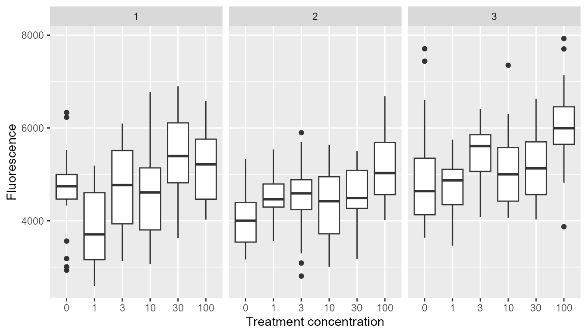
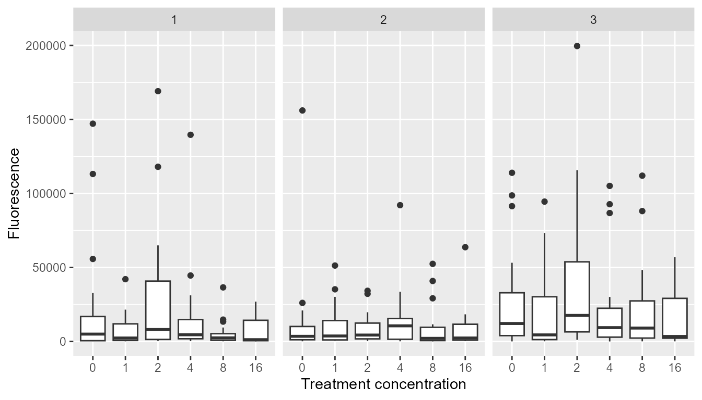
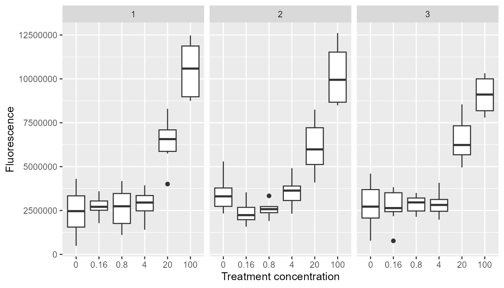

User guide
User_guide.RmdBackground
The package xeredar is an R-package for analysis of the New Approach Methodology (NAM) assays of XETA (Xenopus Eleutheroembryonic Thyroid), RADAR (Rapid Androgen Disruption Activity Reporter) and REACTIV (Rapid Estrogen ACTivity In Vivo) for assessing endocrine effects of chemicals on the thyroid, androgen/steroid and estrogen axis. The functionality is based on the SAS-script recommended in the Annex 13 of OECD test guideline No. 248 of the XETA assay (2019), written by John Green.
Data requirements
Data frames that are supposed to be analyzed with xeredar needs to fulfill certain requirements. The data frame or tibble needs to contain the following column headers:
knitr::kable(head(xeredar::testDataSpiked))| Replicate | Treatment | Row | Fluor | Conc | |
|---|---|---|---|---|---|
| 11 | 1 | 0 + T3 | 4 | 19.768 | 0 |
| 12 | 1 | 0 + T3 | 4 | 27.928 | 0 |
| 13 | 1 | 0 + T3 | 4 | 29.592 | 0 |
| 14 | 1 | 0 + T3 | 4 | 22.816 | 0 |
| 15 | 1 | 0 + T3 | 4 | 26.080 | 0 |
| 16 | 1 | 0 + T3 | 4 | 25.332 | 0 |
The type of each column should be accordingly:
knitr::kable(purrr::map_df(xeredar::testDataSpiked, class))| Replicate | Treatment | Row | Fluor | Conc |
|---|---|---|---|---|
| factor | character | character | numeric | ordered |
| factor | character | character | numeric | factor |
Replicate (i.e. run), Treatment (i.e. a unique name for each treatment level in either spiked or unspiked mode) and Row (i.e. exposure vessel) can either be factor or character columns, but Fluor (i.e. measured fluorescence) must always be numeric and Conc (i.e. concentration of test item) must always contain ordered factors. The order of the columns is not relevant.
Replicate, Treatment and Row can either be factor or character columns, but Fluor must always be numeric and Conc must always contain ordered factors. The order of the columns is not relevant. It is important that the decimal separator is a period instead of a comma.
When simply aiming to use the data_prep() function, the
data frame needs to either contain spiked treatments or unspiked
treatments. When still having spiked and unspiked treatments in one data
frame they should be separated. Imagine you have a XETA data frame (dat)
which contains spiked and unspiked treatments as well as the T4 positive
control. The T3 or T4 additions are designated by “T3” and “T4” in the
Treatment column. The spiked and unspiked datasets
could quickly be subset using the following code:
Running default XETA analysis
To demonstrate how to run XETA analysis, we will use one of the data sets by the French lab containing the spiked and unspiked measurements from the XETA ring test as included in OECD test guideline No. 248 of the XETA assay (2019).
xeta_spiked <- xeredar::valid_data_xeta[["ptu_france_spiked"]]
xeta_unspiked <- xeredar::valid_data_xeta[["ptu_france_unspiked"]]The default XETA analysis can be run using the
data_prep() function with either spiked or unspiked data.
This function automatically decides whether trimming, outlier removal
and/or transformations are conducted following the manuscript
(Spyridonov et al. unpublished). The actual analysis is carried out by
the ana() function. The ana() function is
called by the data_prep() function and does not need to be
called separately. For this dataset, the exposure well ID (Row of the 96
well plate) is not recorded, therefore, we set the row
argument to FALSE. In this case, we use the reduced mixed
ANOVA model where the exposure well ID is not included as a random
effect. Please specify row=TRUE if the exposure well ID is
recorded and you want to use the full mixed ANOVA model.
xeta_spiked_result <- xeredar::data_prep(dataframe = xeta_spiked, row = FALSE)
xeta_unspiked_result <- xeredar::data_prep(dataframe = xeta_unspiked, row= FALSE)Here we use the spike data as an example to demonstrate the output of
the data_prep() function.
The outputs of the data_prep() function are lists
containing the following elements:
- A reasoning for the recommended transformation and trimming. The raw data should be used for the analysis because the residuals of the mixed ANOVA are normally distributed and show homogeneous variances among treatment groups.
xeta_spiked_result$Justify
#> [1] "The raw data should be used for the analysis because\n the residuals of the mixed ANOVA are normally\n distributed and show homogeneous variances\n among treatment groups."- A data frame of the processed data (e.g. raw data, trimmed, transformed, or outlier removed) used for actual statistical testing following the reasoning. The box plots of the processed data per run/replicate (i.e. each panel represents each run/replicate) are also provided for visual inspection.
| Replicate | Treatment | Fluor | Conc | Country | Substance | Spiked |
|---|---|---|---|---|---|---|
| 1 | FETAXT3 | 4989.533 | 0 | france | ptu | TRUE |
| 1 | FETAXT3 | 5002.533 | 0 | france | ptu | TRUE |
| 1 | FETAXT3 | 6331.533 | 0 | france | ptu | TRUE |
| 1 | FETAXT3 | 4645.533 | 0 | france | ptu | TRUE |
| 1 | FETAXT3 | 4977.533 | 0 | france | ptu | TRUE |
| 1 | FETAXT3 | 6229.533 | 0 | france | ptu | TRUE |
xeta_spiked_result$BoxPlots
- Summary tables of the processed data (per replicate and overall)
knitr::kable(xeta_spiked_result$SummaryDF_Rep, caption="Summary statistics of fluorescence in different concentrations of test item per replicate")| Conc | Replicate | N | Mean | Standard deviation | Coefficient of variation |
|---|---|---|---|---|---|
| 0 | 1 | 19 | 4651.060 | 944.7420 | 0.2031240 |
| 0 | 2 | 20 | 4024.300 | 603.6731 | 0.1500070 |
| 0 | 3 | 19 | 4952.225 | 1179.3597 | 0.2381475 |
| 1 | 1 | 19 | 3854.137 | 828.3944 | 0.2149364 |
| 1 | 2 | 20 | 4557.867 | 558.4921 | 0.1225337 |
| 1 | 3 | 19 | 4720.819 | 619.8992 | 0.1313118 |
| 3 | 1 | 19 | 4671.428 | 976.9674 | 0.2091368 |
| 3 | 2 | 19 | 4486.538 | 783.8641 | 0.1747147 |
| 3 | 3 | 20 | 5421.433 | 703.9490 | 0.1298456 |
| 10 | 1 | 20 | 4573.083 | 946.2029 | 0.2069070 |
| 10 | 2 | 19 | 4329.538 | 827.4898 | 0.1911266 |
| 10 | 3 | 19 | 5106.849 | 876.5940 | 0.1716507 |
| 30 | 1 | 20 | 5391.183 | 809.5849 | 0.1501683 |
| 30 | 2 | 19 | 4556.275 | 694.1698 | 0.1523547 |
| 30 | 3 | 19 | 5164.691 | 763.8837 | 0.1479050 |
| 100 | 1 | 19 | 5181.060 | 858.5454 | 0.1657085 |
| 100 | 2 | 19 | 5124.381 | 733.4611 | 0.1431317 |
| 100 | 3 | 20 | 6048.083 | 959.5900 | 0.1586602 |
knitr::kable(xeta_spiked_result$SummaryDF, caption="Summary statistics of fluorescence in different concentrations of test item of all replicates")| Conc | N | Mean | Standard deviation | Coefficient of variation |
|---|---|---|---|---|
| 0 | 58 | 4533.593 | 998.2901 | 0.2201984 |
| 1 | 58 | 4380.715 | 764.2147 | 0.1744498 |
| 3 | 58 | 4869.483 | 910.7568 | 0.1870336 |
| 10 | 58 | 4668.156 | 928.9066 | 0.1989879 |
| 30 | 58 | 5043.483 | 825.4425 | 0.1636652 |
| 100 | 58 | 5461.466 | 945.7370 | 0.1731654 |
- Tables of results evaluated using increasing/decreasing Williams test and/or Dunnett’s test, if applicable.
In the the Williams’ test result tables, Y.Tilde is the amalgamated mean of the fluorescence in each treatment group, Y0 is the mean of the control fluorescence, DIFF is the estimated difference between the treatment and the control, SE_DIFF is the standard error of the Williams’ test, DF is the degrees of freedom for Williams’ test, WILL Incr or Will Decr is the Williams’ test statistic, crit Val is the critical value of Williams distribution, Sign suggests if there is significant difference between the treatment and the control, and %Incr is the percent increase of the fluorescence compared to the control.
In the Dunnett’s test result table, Estimate is the estimated difference between the treatment and the control, SE is the standard error of the mixed ANOVA model, t value is the Dunnett’s test statistic, adj p is the adjusted p value and %Incr is the percent increase of the fluorescence compared to the control.
knitr::kable(xeta_spiked_result$WilliamsIncrease, caption="Increasing Williams' test")| Conc | Y.Tilde | Y0 | DIFF Incr | SE_DIFF | DF | WILL Incr | crit Val | Sign | % Incr | |
|---|---|---|---|---|---|---|---|---|---|---|
| Conc100 - Conc0 | 100 | 5461.47 | 4533.593 | 927.8769 | 249.7868 | 10 | 3.7146758 | 1.971 | TRUE | 20.466613 |
| Conc30 - Conc0 | 30 | 5043.48 | 4533.593 | 509.8869 | 249.7868 | 10 | 2.0412886 | 1.965 | TRUE | 11.246933 |
| Conc10 - Conc0 | 10 | 4768.82 | 4533.593 | 235.2269 | 249.7868 | 10 | 0.9417108 | 1.956 | FALSE | 2.968123 |
| Conc3 - Conc0 | 3 | 4768.82 | 4533.593 | 235.2269 | 249.7868 | 10 | 0.9417108 | 1.940 | FALSE | 7.408918 |
| Conc1 - Conc0 | 1 | 4380.72 | 4533.593 | -152.8731 | 249.7845 | 10 | -0.6120201 | 1.908 | FALSE | -3.372111 |
knitr::kable(xeta_spiked_result$WilliamsDecrease, caption="Decreasing Williams' test")| Conc | Y.Tilde | Y0 | DIFF Decr | SE_DIFF | DF | WILL Decr | crit Val | Sign | % Incr | |
|---|---|---|---|---|---|---|---|---|---|---|
| Conc100 - Conc0 | 100 | 4884.66 | 4533.593 | -351.0669 | 249.7868 | 10 | -1.405466 | 1.971 | FALSE | 20.466613 |
| Conc30 - Conc0 | 30 | 4884.66 | 4533.593 | -351.0669 | 249.7868 | 10 | -1.405466 | 1.965 | FALSE | 11.246933 |
| Conc10 - Conc0 | 10 | 4884.66 | 4533.593 | -351.0669 | 249.7868 | 10 | -1.405466 | 1.956 | FALSE | 2.968123 |
| Conc3 - Conc0 | 3 | 4884.66 | 4533.593 | -351.0669 | 249.7868 | 10 | -1.405466 | 1.940 | FALSE | 7.408918 |
| Conc1 - Conc0 | 1 | 4884.66 | 4533.593 | -351.0669 | 249.7845 | 10 | -1.405479 | 1.908 | FALSE | -3.372111 |
knitr::kable(xeta_spiked_result$Dunnetts, caption="Dunnett's test")| Estimate | SE | df | t value | adj p | % Incr | |
|---|---|---|---|---|---|---|
| Conc1 - Conc0 | -160.4067 | 249.7845 | 10 | -0.6421806 | 0.9458404 | -3.372111 |
| Conc3 - Conc0 | 320.1063 | 249.7868 | 10 | 1.2815181 | 0.5970718 | 7.408918 |
| Conc10 - Conc0 | 128.8281 | 249.7868 | 10 | 0.5157522 | 0.9769722 | 2.968123 |
| Conc30 - Conc0 | 499.2993 | 249.7868 | 10 | 1.9989021 | 0.2367993 | 11.246933 |
| Conc100 - Conc0 | 911.7088 | 249.7868 | 10 | 3.6499482 | 0.0174131 | 20.466613 |
- Further information about the normality test (Shapiro-Wilk), the homogeneity of variance test (Levene’s test) of residuals of the mixed ANOVA model, the monotonicity test and the model fit.
xeta_spiked_result$NormalityTest
#>
#> Shapiro-Wilk normality test
#>
#> data: stats::resid(mixedaov)
#> W = 0.99186, p-value = 0.05343
xeta_spiked_result$LeveneTest
#> # A tibble: 1 × 4
#> statistic p.value df df.residual
#> <dbl> <dbl> <int> <int>
#> 1 0.759 0.580 5 342
xeta_spiked_result$`Monotonicity Test`
#> Test t value Pr(>|t|) Significance
#> 1 Linear 6.49 <0.0001 ***
#> 2 Quadratic 2.14 0.0335 *
xeta_spiked_result$MixedAnova
#> Linear mixed model fit by REML ['lmerMod']
#> Formula: Fluor ~ Conc + (1 | Replicate) + (1 | Replicate:Conc)
#> Data: dataframe
#> REML criterion at convergence: 5608.294
#> Random effects:
#> Groups Name Std.Dev.
#> Replicate:Conc (Intercept) 241.1
#> Replicate (Intercept) 350.5
#> Residual 827.7
#> Number of obs: 348, groups: Replicate:Conc, 18; Replicate, 3
#> Fixed Effects:
#> (Intercept) Conc.L Conc.Q Conc.C Conc^4 Conc^5
#> 4824.2 758.5 264.5 52.6 149.8 -270.8The list output from running the data_prep() function can be summarized with the data_summary() function.
xeredar::data_summary(xeta_spiked_result) |> knitr::kable()| 1 | 3 | 10 | 30 | 100 | |
|---|---|---|---|---|---|
| Replicate 1 | -17.13 | 0.44 | -1.68 | 15.91 | 11.4 |
| Replicate 2 | 13.26 | 11.49 | 7.58 | 13.22 | 27.34 |
| Replicate 3 | -4.67 | 9.47 | 3.12 | 4.29 | 22.13 |
| Pooled | -3.37 | 7.41 | 2.97 | 11.25 | 20.47 |
| Dunnett | ns | ns | ns | ns | * |
| IncreasingWilliams | ns | ns | ns | * | * |
| DecreasingWilliams | ns | ns | ns | ns | ns |
Running default RADAR analysis
To demonstrate how to run RADAR analysis, we will use one of the data sets by the Pos_mDHT_Fraunhofer_RADAR containing the spiked and unspiked measurements from the RADAR study validation in the lab Fraunhofer with an androgen axis active chemical.
radar_spiked <- xeredar::Pos_mDHT_Fraunhofer_RADAR_Spiked
radar_unspiked <- xeredar::Pos_mDHT_Fraunhofer_RADAR_UnspikedThe default radar analysis can be run using the
data_prep() function with either spiked or unspiked data.
This function automatically decides whether trimming, outlier removal
and/or transformations are conducted following the manuscript
(Spyridonov et al. unpublished). The actual analysis is carried out by
the ana() function. The ana() function is
called by the data_prep() function and does not need to be
called separately. the analysis the RADAR assay follows the description
of the Method 2 (the mixed ANOVA approach) in the Annex 8: methods for
the statistical analysis of RADAR assay data of the OECD TG 251 (2022).
For this dataset, the exposure well ID (Row of the 96 well plate) is not
recorded, therefore, we set the row argument to
FALSE. In this case, we use the reduced mixed ANOVA model
where the exposure well ID is not included as a random effect. Please
specify row=TRUE if the exposure well ID is recorded and
you want to use the full mixed ANOVA model. Trimming is not
required.
radar_spiked_result <- xeredar::data_prep(dataframe = radar_spiked, row = FALSE, trimming=FALSE)
radar_unspiked_result <- xeredar::data_prep(dataframe = radar_unspiked, row= FALSE, trimming=FALSE)Here we use the spike data as an example to demonstrate the output of
the data_prep() function.
The outputs of the data_prep() function are lists
containing the following elements:
- A reasoning for the recommended transformation and trimming. The raw data (without trimming or outlier removal) where the fluorescence values are box-cox transformed should be used for the analysis because only after box-cox transformation, the residuals of the mixed ANOVA are normally distributed and have homogeneous variances among treatment groups.
radar_spiked_result$Justify
#> [1] "The raw data (without trimming or outlier removal)\n where the fluorescence values are box-cox transformed\n should be used for the analysis because only after\n box-cox transformation, the residuals of the mixed\n ANOVA are normally distributed and have homogeneous\n variances among treatment groups."- A data frame of the processed data (e.g. raw data, transformed, or outlier removed) used for actual statistical testing following the reasoning. The box plots of the processed data per run/replicate (i.e. each panel represents each run/replicate) are also provided for visual inspection.
| Replicate | Treatment | Fluor | Conc |
|---|---|---|---|
| 1 | MT_0 | 113152 | 0 |
| 1 | mDHT-1µg/L+MT | 708 | 1 |
| 1 | mDHT-2µg/L+MT | 2498 | 2 |
| 1 | mDHT-4µg/L+MT | 10152 | 4 |
| 1 | mDHT-8µg/L+MT | 356 | 8 |
| 1 | mDHT-16µg/L+MT | 4621 | 16 |
radar_spiked_result$BoxPlots
- Summary tables of the processed data (per replicate and overall)
knitr::kable(radar_spiked_result$SummaryDF_Rep, caption="Summary statistics of fluorescence in different concentrations of test item per replicate")| Conc | Replicate | N | Mean | Standard deviation | Coefficient of variation |
|---|---|---|---|---|---|
| 0 | 1 | 20 | 21472.45 | 39991.342 | 1.862449 |
| 0 | 2 | 20 | 13337.15 | 34300.658 | 2.571813 |
| 0 | 3 | 20 | 26313.45 | 35370.046 | 1.344181 |
| 1 | 1 | 20 | 7711.10 | 10559.058 | 1.369332 |
| 1 | 2 | 20 | 10044.70 | 13997.692 | 1.393540 |
| 1 | 3 | 21 | 18764.48 | 27176.392 | 1.448289 |
| 2 | 1 | 20 | 29476.80 | 44428.181 | 1.507225 |
| 2 | 2 | 20 | 8471.85 | 10013.423 | 1.181964 |
| 2 | 3 | 21 | 37028.38 | 50456.149 | 1.362634 |
| 4 | 1 | 20 | 16336.90 | 31480.267 | 1.926943 |
| 4 | 2 | 20 | 14077.65 | 20278.502 | 1.440475 |
| 4 | 3 | 20 | 22364.45 | 32556.358 | 1.455719 |
| 8 | 1 | 20 | 5425.90 | 8478.898 | 1.562671 |
| 8 | 2 | 20 | 8867.10 | 14750.623 | 1.663523 |
| 8 | 3 | 20 | 21992.45 | 30246.253 | 1.375302 |
| 16 | 1 | 20 | 6758.70 | 8394.210 | 1.241986 |
| 16 | 2 | 20 | 7988.10 | 14300.281 | 1.790198 |
| 16 | 3 | 20 | 15274.35 | 19124.161 | 1.252044 |
knitr::kable(radar_spiked_result$SummaryDF, caption="Summary statistics of fluorescence in different concentrations of test item of all replicates")| Conc | N | Mean | Standard deviation | Coefficient of variation |
|---|---|---|---|---|
| 0 | 60 | 20374.35 | 36413.54 | 1.787224 |
| 1 | 61 | 12281.48 | 19154.08 | 1.559591 |
| 2 | 61 | 25189.66 | 40666.43 | 1.614410 |
| 4 | 60 | 17593.00 | 28378.41 | 1.613052 |
| 8 | 60 | 12095.15 | 20967.68 | 1.733561 |
| 16 | 60 | 10007.05 | 14855.60 | 1.484513 |
- Tables of results evaluated using increasing/decreasing Williams test and/or Dunnett’s test, if applicable.
In the the Williams’ test result tables, Y.Tilde is the amalgamated mean of the fluorescence in each treatment group, Y0 is the mean of the control fluorescence, DIFF is the estimated difference between the treatment and the control, SE_DIFF is the standard error of the Williams’ test, DF is the degrees of freedom for Williams’ test, WILL Incr or Will Decr is the Williams’ test statistic, crit Val is the critical value of Williams distribution, Sign suggests if there is significant difference between the treatment and the control, and %Incr is the percent increase of the fluorescence compared to the control.
In the Dunnett’s test result table, Estimate is the estimated difference between the treatment and the control, SE is the standard error of the mixed ANOVA model, t value is the Dunnett’s test statistic, adj p is the adjusted p value and %Incr is the percent increase of the fluorescence compared to the control.
knitr::kable(radar_spiked_result$WilliamsIncrease, caption="Increasing Williams' test")| Conc | Y.Tilde | Y0 | DIFF Incr | SE_DIFF | DF | WILL Incr | crit Val | Sign | % Incr | |
|---|---|---|---|---|---|---|---|---|---|---|
| Conc16 - Conc0 | 16 | 11.1995 | 11.24223 | -0.04273 | 0.5230995 | 10 | -0.0816862 | 1.971 | FALSE | -50.88408 |
| Conc8 - Conc0 | 8 | 11.1995 | 11.24223 | -0.04273 | 0.5230995 | 10 | -0.0816862 | 1.965 | FALSE | -40.63541 |
| Conc4 - Conc0 | 4 | 11.1995 | 11.24223 | -0.04273 | 0.5230995 | 10 | -0.0816862 | 1.956 | FALSE | -13.65123 |
| Conc2 - Conc0 | 2 | 11.1995 | 11.24223 | -0.04273 | 0.5209615 | 10 | -0.0820214 | 1.940 | FALSE | 23.63416 |
| Conc1 - Conc0 | 1 | 10.7566 | 11.24223 | -0.48563 | 0.5209615 | 10 | -0.9321802 | 1.908 | FALSE | -39.72090 |
knitr::kable(radar_spiked_result$WilliamsDecrease, caption="Decreasing Williams' test")| Conc | Y.Tilde | Y0 | DIFF Decr | SE_DIFF | DF | WILL Decr | crit Val | Sign | % Incr | |
|---|---|---|---|---|---|---|---|---|---|---|
| Conc16 - Conc0 | 16 | 10.4996 | 11.24223 | 0.74263 | 0.5230995 | 10 | 1.4196726 | 1.971 | FALSE | -50.88408 |
| Conc8 - Conc0 | 8 | 10.6478 | 11.24223 | 0.59443 | 0.5230995 | 10 | 1.1363613 | 1.965 | FALSE | -40.63541 |
| Conc4 - Conc0 | 4 | 11.4661 | 11.24223 | -0.22387 | 0.5230995 | 10 | -0.4279683 | 1.956 | FALSE | -13.65123 |
| Conc2 - Conc0 | 2 | 11.4661 | 11.24223 | -0.22387 | 0.5209615 | 10 | -0.4297247 | 1.940 | FALSE | 23.63416 |
| Conc1 - Conc0 | 1 | 11.4661 | 11.24223 | -0.22387 | 0.5209615 | 10 | -0.4297247 | 1.908 | FALSE | -39.72090 |
knitr::kable(radar_spiked_result$Dunnetts, caption="Dunnett's test")| Estimate | SE | df | t value | adj p | % Incr | |
|---|---|---|---|---|---|---|
| Conc1 - Conc0 | -0.4981949 | 0.5209615 | 10 | -0.9562989 | 0.8003229 | -39.72090 |
| Conc2 - Conc0 | 0.8271841 | 0.5209615 | 10 | 1.5878028 | 0.4159647 | 23.63416 |
| Conc4 - Conc0 | 0.3056907 | 0.5230995 | 10 | 0.5843835 | 0.9619664 | -13.65123 |
| Conc8 - Conc0 | -0.5944222 | 0.5230995 | 10 | -1.1363464 | 0.6892705 | -40.63541 |
| Conc16 - Conc0 | -0.7426002 | 0.5230995 | 10 | -1.4196155 | 0.5114138 | -50.88408 |
- Further information about the normality test (Shapiro-Wilk), the homogeneity of variance test (Levene’s test) of residuals of the mixed ANOVA model, the monotonicity test and the model fit.
radar_spiked_result$NormalityTest
#>
#> Shapiro-Wilk normality test
#>
#> data: stats::resid(mixedaov)
#> W = 0.99162, p-value = 0.03852
radar_spiked_result$LeveneTest
#> # A tibble: 1 × 4
#> statistic p.value df df.residual
#> <dbl> <dbl> <int> <int>
#> 1 0.328 0.896 5 356
radar_spiked_result$`Monotonicity Test`
#> Test t value Pr(>|t|) Significance
#> 1 Linear -1.49 0.1372 .
#> 2 Quadratic -2.10 0.0364 *
radar_spiked_result$MixedAnova
#> Linear mixed model fit by REML ['lmerMod']
#> Formula:
#> (Fluor^lambda - 1)/lambda ~ Conc + (1 | Replicate) + (1 | Replicate:Conc)
#> Data: dataframe
#> REML criterion at convergence: 1790.386
#> Random effects:
#> Groups Name Std.Dev.
#> Replicate:Conc (Intercept) 0.000
#> Replicate (Intercept) 0.708
#> Residual 2.865
#> Number of obs: 362, groups: Replicate:Conc, 18; Replicate, 3
#> Fixed Effects:
#> (Intercept) Conc.L Conc.Q Conc.C Conc^4 Conc^5
#> 11.12517 -0.54062 -0.78033 -0.07106 0.90730 -0.34498
#> optimizer (nloptwrap) convergence code: 0 (OK) ; 0 optimizer warnings; 1 lme4 warningsThe list output from running the data_prep() function can be summarized with the data_summary() function.
xeredar::data_summary(radar_spiked_result) |>
knitr::kable()| 1 | 2 | 4 | 8 | 16 | |
|---|---|---|---|---|---|
| Replicate 1 | -64.09 | 37.28 | -23.92 | -74.73 | -68.52 |
| Replicate 2 | -24.69 | -36.48 | 5.55 | -33.52 | -40.11 |
| Replicate 3 | -28.69 | 40.72 | -15.01 | -16.42 | -41.95 |
| Pooled | -39.72 | 23.63 | -13.65 | -40.64 | -50.88 |
| Dunnett | ns | ns | ns | ns | ns |
| IncreasingWilliams | ns | ns | ns | ns | ns |
| DecreasingWilliams | ns | ns | ns | ns | ns |
Running default REACTIV analysis
To demonstrate how to run REACTIV analysis, we will use one artificial data set containing the spiked and unspiked measurements.
reactiv_spiked <- xeredar::reactiv_data |>
dplyr::filter(Spiked == TRUE)
reactiv_unspiked <- xeredar::reactiv_data |>
dplyr::filter(Spiked == FALSE)The default REACTIV analysis can be run using the
data_prep() function with either spiked or unspiked data.
This function automatically decides whether trimming, outlier removal
and/or transformations are conducted following the manuscript
(Spyridonov et al. unpublished). The actual analysis is carried out by
the ana() function. The ana() function is
called by the data_prep() function and does not need to be
called separately. The analysis the REACTIV assay follows the
description of the Method 2 (the mixed ANOVA approach) in the Annex 8:
methods for the statistical analysis of REACTIV assay data of the
Amended Draft new Test Guideline for the REACTIV assay for second
WNT-review (30.01.2024).
For this assay, the row argument should be set to
FALSE. Trimming is not required. In case there are
residuals deviate from normality and variance homogeneity, outlier
removal (e.g. by applying the Tukey rule (Green et al., 2018) and data
transformation (for example log- or square-root) can be conducted.
reactiv_spiked_result <- xeredar::data_prep(dataframe = reactiv_spiked, row = FALSE, trimming=FALSE, boxcox = FALSE)
reactiv_unspiked_result <- xeredar::data_prep(dataframe = reactiv_unspiked, row= FALSE, trimming=FALSE, boxcox = FALSE)Here we use the spiked data as an example to demonstrate the output
of the data_prep() function.
The outputs of the data_prep() function are lists
containing the following elements:
- A reasoning for the recommended transformation and trimming. The data from which outliers were removed with the Tukey-rule where the fluorescence values are square-root transformed, should be used for the analysis because only after outlier removal and sqrt transformation, the residuals of the mixed ANOVA are normally distributed and have homogeneous variances among treatment groups
reactiv_spiked_result$Justify
#> [1] "The data from which outliers were removed with the\n Tukey-rule where the fluorescence values are square-root\n transformed, should be used for the analysis because only\n after outlier removal and sqrt transformation, the\n residuals of the mixed ANOVA are normally distributed\n and have homogeneous variances among treatment groups"- A data frame of the processed data (e.g. raw data, transformed, or outlier removed) used for actual statistical testing following the reasoning. The box plots of the processed data per run/replicate (i.e. each panel represents each run/replicate) are also provided for visual inspection.
| Replicate | Conc | Fluor | Treatment | Spiked |
|---|---|---|---|---|
| 1 | 0 | 1801520 | 0 | TRUE |
| 1 | 0 | 1517719 | 0 | TRUE |
| 1 | 0 | 2517533 | 0 | TRUE |
| 1 | 0 | 3744706 | 0 | TRUE |
| 1 | 0 | 2744990 | 0 | TRUE |
| 1 | 0 | 2889488 | 0 | TRUE |
reactiv_spiked_result$BoxPlots
- Summary tables of the processed data (per replicate and overall)
knitr::kable(reactiv_spiked_result$SummaryDF_Rep, caption="Summary statistics of fluorescence in different concentrations of test item per replicate")| Conc | Replicate | N | Mean | Standard deviation | Coefficient of variation |
|---|---|---|---|---|---|
| 0 | 1 | 16 | 2486847 | 1154357.6 | 0.4641853 |
| 0 | 2 | 16 | 3341118 | 797137.2 | 0.2385839 |
| 0 | 3 | 16 | 2783708 | 1049011.8 | 0.3768398 |
| 0.16 | 1 | 8 | 2748986 | 550546.7 | 0.2002727 |
| 0.16 | 2 | 8 | 2382941 | 636560.2 | 0.2671321 |
| 0.16 | 3 | 8 | 2705488 | 981794.9 | 0.3628901 |
| 0.8 | 1 | 8 | 2683131 | 1093419.6 | 0.4075163 |
| 0.8 | 2 | 8 | 2567366 | 412800.9 | 0.1607877 |
| 0.8 | 3 | 8 | 2860645 | 499925.0 | 0.1747595 |
| 4 | 1 | 8 | 2885645 | 850608.9 | 0.2947725 |
| 4 | 2 | 8 | 3581072 | 837331.5 | 0.2338214 |
| 4 | 3 | 8 | 2870297 | 644055.0 | 0.2243862 |
| 20 | 1 | 6 | 6389817 | 1455541.4 | 0.2277908 |
| 20 | 2 | 7 | 6142859 | 1499704.2 | 0.2441378 |
| 20 | 3 | 7 | 6533288 | 1256422.3 | 0.1923109 |
| 100 | 1 | 5 | 10533255 | 1668866.7 | 0.1584379 |
| 100 | 2 | 4 | 10248429 | 1982668.2 | 0.1934607 |
| 100 | 3 | 4 | 9080113 | 1215680.9 | 0.1338839 |
knitr::kable(reactiv_spiked_result$SummaryDF, caption="Summary statistics of fluorescence in different concentrations of test item of all replicates")| Conc | N | Mean | Standard deviation | Coefficient of variation |
|---|---|---|---|---|
| 0 | 48 | 2870558 | 1052304.4 | 0.3665854 |
| 0.16 | 24 | 2612472 | 732636.7 | 0.2804381 |
| 0.8 | 24 | 2703714 | 712021.2 | 0.2633493 |
| 4 | 24 | 3112338 | 821286.1 | 0.2638807 |
| 20 | 20 | 6353596 | 1339757.0 | 0.2108659 |
| 100 | 13 | 9998496 | 1643685.7 | 0.1643933 |
- Tables of results evaluated using increasing/decreasing Williams test and/or Dunnett’s test, if applicable.
In the Williams’ test result tables, Y.Tilde is the amalgamated mean of the fluorescence in each treatment group, Y0 is the mean of the control fluorescence, DIFF is the estimated difference between the treatment and the control, SE_DIFF is the standard error of the Williams’ test, DF is the degrees of freedom for Williams’ test, WILL Incr or Will Decr is the Williams’ test statistic, crit Val is the critical value of Williams distribution, Sign suggests if there is significant difference between the treatment and the control, and %Incr is the percent increase of the fluorescence compared to the control.
In the Dunnett’s test result table, Estimate is the estimated difference between the treatment and the control, SE is the standard error of the mixed ANOVA model, t value is the Dunnett’s test statistic, adj p is the adjusted p value and %Incr is the percent increase of the fluorescence compared to the control.
knitr::kable(reactiv_spiked_result$WilliamsIncrease, caption="Increasing Williams' test")| Conc | Y.Tilde | Y0 | DIFF Incr | SE_DIFF | DF | WILL Incr | crit Val | Sign | % Incr | |
|---|---|---|---|---|---|---|---|---|---|---|
| Conc100 - Conc0 | 100 | 3152.32 | 1661.366 | 1490.95383 | 97.89606 | 9 | 15.2299684 | 1.998 | TRUE | 248.311979 |
| Conc20 - Conc0 | 20 | 2506.80 | 1661.366 | 845.43383 | 87.04570 | 9 | 9.7125278 | 1.991 | TRUE | 121.336658 |
| Conc4 - Conc0 | 4 | 1748.86 | 1661.366 | 87.49383 | 83.38750 | 9 | 1.0492440 | 1.981 | FALSE | 8.422775 |
| Conc0.8 - Conc0 | 0.8 | 1629.52 | 1661.366 | -31.84617 | 83.38750 | 9 | -0.3819058 | 1.965 | FALSE | -5.812226 |
| Conc0.16 - Conc0 | 0.16 | 1598.55 | 1661.366 | -62.81617 | 83.38750 | 9 | -0.7533044 | 1.931 | FALSE | -8.990784 |
knitr::kable(reactiv_spiked_result$WilliamsDecrease, caption="Decreasing Williams' test")| Conc | Y.Tilde | Y0 | DIFF Decr | SE_DIFF | DF | WILL Decr | crit Val | Sign | % Incr | |
|---|---|---|---|---|---|---|---|---|---|---|
| Conc100 - Conc0 | 100 | 2007.29 | 1661.366 | -345.9238 | 97.89606 | 9 | -3.533583 | 1.998 | FALSE | 248.311979 |
| Conc20 - Conc0 | 20 | 2007.29 | 1661.366 | -345.9238 | 87.04570 | 9 | -3.974048 | 1.991 | FALSE | 121.336658 |
| Conc4 - Conc0 | 4 | 2007.29 | 1661.366 | -345.9238 | 83.38750 | 9 | -4.148390 | 1.981 | FALSE | 8.422775 |
| Conc0.8 - Conc0 | 0.8 | 2007.29 | 1661.366 | -345.9238 | 83.38750 | 9 | -4.148390 | 1.965 | FALSE | -5.812226 |
| Conc0.16 - Conc0 | 0.16 | 2007.29 | 1661.366 | -345.9238 | 83.38750 | 9 | -4.148390 | 1.931 | FALSE | -8.990784 |
knitr::kable(reactiv_spiked_result$Dunnetts, caption="Dunnett's test")| Estimate | SE | df | t value | adj p | % Incr | |
|---|---|---|---|---|---|---|
| Conc0.16 - Conc0 | -62.81884 | 83.38750 | 9 | -0.7533364 | 0.9231737 | -8.990784 |
| Conc0.8 - Conc0 | -31.84356 | 83.38750 | 9 | -0.3818746 | 0.9953441 | -5.812226 |
| Conc4 - Conc0 | 87.49635 | 83.38750 | 9 | 1.0492743 | 0.7798328 | 8.422775 |
| Conc20 - Conc0 | 845.49890 | 87.04570 | 9 | 9.7132754 | 0.0000051 | 121.336658 |
| Conc100 - Conc0 | 1489.69562 | 97.89606 | 9 | 15.2171158 | 0.0000000 | 248.311979 |
- Further information about the normality test (Shapiro-Wilk), the homogeneity of variance test (Levene’s test) of residuals of the mixed ANOVA model, the monotonicity test and the model fit.
reactiv_spiked_result$NormalityTest
#>
#> Shapiro-Wilk normality test
#>
#> data: stats::resid(mixedaov)
#> W = 0.98187, p-value = 0.04164
reactiv_spiked_result$LeveneTest
#> # A tibble: 1 × 4
#> statistic p.value df df.residual
#> <dbl> <dbl> <int> <int>
#> 1 1.59 0.167 5 147
reactiv_spiked_result$`Monotonicity Test`
#> Test t value Pr(>|t|) Significance
#> 1 Linear 12.67 <0.0001 ***
#> 2 Quadratic 6.66 <0.0001 ***
reactiv_spiked_result$MixedAnova
#> Linear mixed model fit by REML ['lmerMod']
#> Formula: sqrt(Fluor) ~ Conc + (1 | Replicate) + (1 | Replicate:Conc)
#> Data: wt_outlier
#> REML criterion at convergence: 2090.548
#> Random effects:
#> Groups Name Std.Dev.
#> Replicate:Conc (Intercept) 58.87516
#> Replicate (Intercept) 0.01916
#> Residual 272.54703
#> Number of obs: 153, groups: Replicate:Conc, 18; Replicate, 3
#> Fixed Effects:
#> (Intercept) Conc.L Conc.Q Conc.C Conc^4 Conc^5
#> 2049.37 1230.22 703.01 45.68 -141.18 -117.07
#> optimizer (nloptwrap) convergence code: 0 (OK) ; 0 optimizer warnings; 1 lme4 warningsThe list output from running the data_prep() function can be summarized with the data_summary() function.
xeredar::data_summary(reactiv_spiked_result) |>
knitr::kable()| 0.16 | 0.8 | 4 | 20 | 100 | |
|---|---|---|---|---|---|
| Replicate 1 | 10.54 | 7.89 | 16.04 | 156.94 | 323.56 |
| Replicate 2 | -28.68 | -23.16 | 7.18 | 83.86 | 206.74 |
| Replicate 3 | -2.81 | 2.76 | 3.11 | 134.7 | 226.19 |
| Pooled | -8.99 | -5.81 | 8.42 | 121.34 | 248.31 |
| Dunnett | ns | ns | ns | * | * |
| IncreasingWilliams | ns | ns | ns | * | * |
| DecreasingWilliams | ns | ns | ns | ns | ns |
Validation
In order to validate the package, we will analyze all 36 XETA ring
test studies and produce a table that can be compared with the table in
the validation report. The validation studies are available in the
xeredar package. In case the produced table is in line with
the table description, then the package is doing exactly what it is
supposed to do and analyzed all 36 XETA ring test studies correctly.
out <- !stringr::str_detect(names(xeredar::valid_data_xeta), "_combined$" )
list_dfs <- xeredar::valid_data_xeta[out]
data_prep_trim <- function(df){
df <- df |> dplyr::filter(!is.na(Fluor))
dat_trim <- xeredar::trim(df)$dat_trim
results <- xeredar::data_prep(dat_trim, row= FALSE, trim=FALSE, outlier = FALSE)
return(results)
}
results <- purrr::map(list_dfs, data_prep_trim, .progress = TRUE)
worked <- !purrr::map_vec(results, is.list)
difficult_dfs <- list_dfs[worked]
changing_alpha <- c(c(1,5) %o% 10^-(3:17), 0)
decreasing_alpha <- function(df, vector){
for(i in vector){
df <- df |> filter(!is.na(Fluor))
dat_trim <- xeredar::trim(df)$dat_trim
result <- data_prep(df, row=FALSE, alpha = i, trim=FALSE, outlier = FALSE)
if(is.list(result)){
break
} else{
next
}
}
result[["alpha"]] <- i
return(result)
}
result_difficult_dfs <- purrr::map(.x=difficult_dfs, .f= decreasing_alpha, vector = changing_alpha)
results_alpha_decrease <- results[map_vec(results, is.list)]
results <- append(results_alpha_decrease, result_difficult_dfs)
check_positive <- function(df){
if(df[["Monotonicity Test"]]$`Pr(>|t|)`[1] >= 0.01 &
df[["Monotonicity Test"]]$`Pr(>|t|)`[2] <= 0.01 ) {
return(df[["Dunnetts"]])
} else if (length(unique(df$WilliamsIncrease$Y.Tilde)) - 1 > floor(nrow(df$WilliamsIncrease)/2) |
length(unique(df$WilliamsDecrease$Y.Tilde)) - 1 > floor(nrow(df$WilliamsDecrease)/2)) {
return(list(WilliamsIncrease = df[["WilliamsIncrease"]], WilliamsDecrease = df[["WilliamsDecrease"]]))
} else{
return(df[["Dunnetts"]])
}
}
results_2 <- purrr::map(results, check_positive)
Williams <- !purrr::map_vec(results_2, is.data.frame)
significances <- function(df, Williams= FALSE){
if(Williams) {
if(length(unique(df$WilliamsIncrease$Y.Tilde)) - 1 >
floor(nrow(df$WilliamsIncrease)/2)){
TRUE %in% df[["WilliamsIncrease"]]$Sign
} else{
TRUE %in% df[["WilliamsDecrease"]]$Sign
}
} else{
df[["adj p"]][length(df[["adj p"]])] < 0.05
}
}
prelim_thyroid_active <- purrr::map2_vec(results_2, Williams, significances)
country_substance_spiked <- names(results_2) |> stringr::str_split("\\_") |> as.data.frame() |> t() |> dplyr::as_tibble() |> dplyr::rename("substance" = "V1", "country" = "V2", "spiked" = "V3") |> dplyr::mutate(Sign = prelim_thyroid_active)
increase_h12 <- results |> purrr::map_vec(function(x) {(x[["SummaryDF"]]$Mean[nrow(x[["SummaryDF"]])] / x[["SummaryDF"]]$Mean[1])-1 })
thyroid_active <- country_substance_spiked |> dplyr::mutate(Increase = increase_h12,
thyroid_active = ifelse(Increase >= 0.12 & Sign == TRUE & spiked == "unspiked" |
abs(Increase) >= 0.12 & Sign == TRUE & spiked == "spiked" , "Thyroid active", "Thyroid inactive")) |>
dplyr::select(!Sign, !Increase) |>
dplyr::summarise(thyroid_active = ifelse("Thyroid active" %in% thyroid_active, "Thyroid active", "Thyroid inactive"), .by= c(substance, country)) |>
dplyr::mutate(
country = ifelse(country== "japan" & substance %in% c("e2", "nh3") |
country == "japan2", "japan lab2", country)) |>
pivot_wider(names_from = country, values_from = thyroid_active) |>
dplyr::arrange(match(substance, c("t3", "ptu", "t4", "triac", "cefuroxime","linuron", "nh3", "testosterone","e2", "abamectine", "acetone", "isophorone", "metholmyl"))) |>
mutate(`Expected classification`= c("Thyroid active", "Thyroid active", "Thyroid active", "Thyroid active", "Thyroid inactive", "Thyroid active", "Thyroid active", "Unclear", "Thyroid inactive", "Thyroid inactive","Thyroid inactive","Thyroid inactive","Thyroid inactive"))|>
dplyr::relocate(c(substance,`Expected classification`, france,japan, usa, `japan lab2`, belgium, portugal )) |>
dplyr::rename(USA = usa)
gt::gt(thyroid_active, rowname_col = "substance") |>
gt::tab_options(column_labels.text_transform = "capitalize",
stub.text_transform = "uppercase") |>
gt::data_color(columns= -substance, na_color = "white", palette = c("#c2cd94", "#b4c6e7", "white")) |>
gt::tab_stubhead(label = "Chemical")|>
gt::tab_spanner(
label = "Laboratory",
columns = c(france, japan, USA, 'japan lab2', belgium, portugal)
) |>
gt::tab_style(
style = list(
gt::cell_text(color = "#D9654B", weight= "bold")
),
locations = gt::cells_body(
columns = c(france, belgium), # not needed if coloring all columns
rows = 8)
) |>
gt::tab_header(
title = "Summary table of results from statistical analysis of all 36 validation studies of the ring test of the XETA test guideline. This table shows the results of the automatic analysis carried out with the data_prep() function of the xeredar R-package. Furthermore, this table summarises the results of the original analysis carried out by John Green using SAS. As both approaches led to exactly the same conclusions, only one table is shown. In case a substance was identified to be Thyroid active, the respective cell is colored green, whereas when a substance was identified to be Thyroid inactive, the cell was colored blue. For the study applying testosterone in the french lab, the writing is colored red, because in the original table in the validation document, this substance was incorrectly classified as Thyroid active due to a data transfer mistake. Furthermore, for the study applying testosterone in the belgium lab, the writing is colored red, as well, because in the validation document, a slip in the column led to incorrectly categorizing the respective results as carried out by the japanese lab2.")| Summary table of results from statistical analysis of all 36 validation studies of the ring test of the XETA test guideline. This table shows the results of the automatic analysis carried out with the data_prep() function of the xeredar R-package. Furthermore, this table summarises the results of the original analysis carried out by John Green using SAS. As both approaches led to exactly the same conclusions, only one table is shown. In case a substance was identified to be Thyroid active, the respective cell is colored green, whereas when a substance was identified to be Thyroid inactive, the cell was colored blue. For the study applying testosterone in the french lab, the writing is colored red, because in the original table in the validation document, this substance was incorrectly classified as Thyroid active due to a data transfer mistake. Furthermore, for the study applying testosterone in the belgium lab, the writing is colored red, as well, because in the validation document, a slip in the column led to incorrectly categorizing the respective results as carried out by the japanese lab2. | |||||||
| Chemical | Expected classification | Laboratory | |||||
|---|---|---|---|---|---|---|---|
| france | japan | USA | japan lab2 | belgium | portugal | ||
| t3 | Thyroid active | Thyroid active | Thyroid active | Thyroid active | NA | Thyroid active | Thyroid active |
| ptu | Thyroid active | Thyroid active | Thyroid active | Thyroid active | Thyroid active | Thyroid active | Thyroid active |
| t4 | Thyroid active | Thyroid active | Thyroid active | Thyroid active | NA | NA | NA |
| triac | Thyroid active | Thyroid active | Thyroid active | Thyroid active | NA | NA | NA |
| cefuroxime | Thyroid inactive | Thyroid inactive | Thyroid inactive | Thyroid inactive | NA | NA | NA |
| linuron | Thyroid active | Thyroid active | NA | NA | NA | Thyroid active | Thyroid inactive |
| nh3 | Thyroid active | Thyroid active | NA | NA | Thyroid active | NA | Thyroid active |
| testosterone | Unclear | Thyroid inactive | NA | NA | NA | Thyroid inactive | NA |
| e2 | Thyroid inactive | Thyroid inactive | NA | NA | Thyroid inactive | Thyroid inactive | Thyroid inactive |
| acetone | Thyroid inactive | Thyroid inactive | NA | NA | NA | NA | NA |
| isophorone | Thyroid inactive | Thyroid inactive | NA | NA | NA | NA | NA |
| abamactine | Thyroid inactive | Thyroid inactive | NA | NA | NA | NA | NA |
| methomyl | Thyroid inactive | Thyroid inactive | NA | NA | NA | NA | NA |
References
OECD. 2019a. Validation Report of the Xenopus Eleutheroembryonic Thyroid Signaling Assay (XETA) for the Detection of Thyroid Active Substances. OECD.
OECD. 2019b. TG 248: Xenopus Eleutheroembryonic Thyroid Assay (XETA). OECD. https://doi.org/10.1787/a13f80ee-en.
OECD. 2022b. Test No. 251: Rapid Androgen Disruption Activity Reporter (RADAR) Assay. OECD. https://doi.org/10.1787/da264d82-en.
OECD. 2022a. Rapid Estrogen Activity in Vivo (REACTIV) Assay (OECD Draft TG): Guideline for the Testing of Chemicals, Section 2: Effects on Biotic System. OECD.